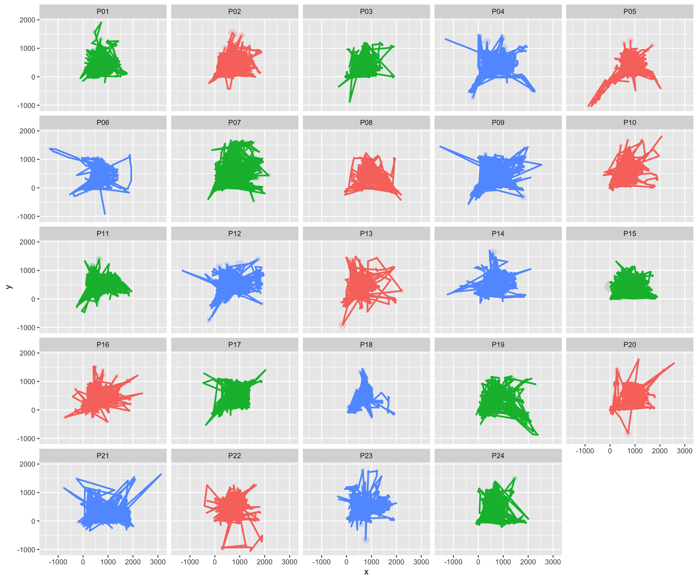
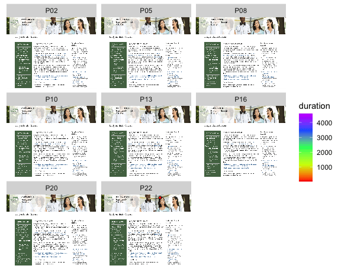

Welcome to my final project of EDLD 652: Data Visualization class.
My name is Seulbi Lee, and Im a second year PhD student in Special
Education program. One of my projects that Im planning is related to
eye tracking research to better understand struggling readers
comprehension, so I wanted to include two eye tracking datasets for this
project.
The first dataset (Browsing on Screen) consists of raw gaze
coordinates (x-y) of 24 participants while performing online activities
during five minutes. The eye movements were recorded using Tobii X2-30
eye tracker and Tobii Pro Studio software. In my project, only Browsing
activity is included. Original data can be found at https://www.kaggle.com/datasets/namratasri01/eye-movement-data-set-for-desktop-activities
The second dataset (Face Viewing Experiment) is from a published study titled A relationship between Autism-Spectrum Quotient and face viewing behavior in 98 participants. The eye movements were recorded using Eye Link 1000 Plus and analyzed with SR Researchs Eyelink software. Original data and article can be found at https://doi.org/10.5061/dryad.zpc866t5c
Each tab includes one or one set of visualizations from eye tracking research data described above with short descriptions.
The eye gaze path plots show us each participants eye movement while browsing on screen for five minutes. Different colors indicate different sets (screens) they were browsing.

References
Srivastava, N., Newn, J., &
Velloso, E. (2018). Combining Low and Mid-Level Gaze Features for
Desktop Activity Recognition. Proceedings of the ACM on Interactive,
Mobile, Wearable and Ubiquitous Technologies, 2(4), 189.
The screenshots of websites are not what they were looking; however, I added each screenshot to help you understand what regions on the webpage each participant was gazing (e.g., title, content, sidebar, etc.).

References
Oregon Ducks. (2022, October 25). In
Wikipedia. https://en.wikipedia.org/wiki/Oregon_Ducks
Oregon.gov. (n.d.). Equity and Student Success. https://www.oregon.gov/highered/policy-collaboration/Pages/equity-success.aspx
Statista.com. (n.d.). Daily Infographics: Global stories vividly
visualized. https://www.statista.com/chartoftheday/ Srivastava, N.,
Newn, J., & Velloso, E. (2018). Combining Low and Mid-Level Gaze
Features for Desktop Activity Recognition. Proceedings of the ACM on
Interactive, Mobile, Wearable and Ubiquitous Technologies, 2(4),
189.
This plot shows how each subscale of Autism-Spectrum Quotient is related to the time spent areas of interest (i.e., face in this experiment) while an interlocutor was talking.
References
Wegner-Clemens, Kira, Rennig,
Johannes, & Beauchamp, Michael S. (2020). A relationship between
Autism-Spectrum Quotient and face viewing behavior in 98 participants
[Data set]. https://doi.org/10.5061/dryad.zpc866t5c
This plot indicates the correlations between fixation duration (i.e., participants eyes stopped scanning the object and hold the foveal area in one place) and the total and each subscale of Autism-Spectrum Quotient.
References
Wegner-Clemens, Kira, Rennig,
Johannes, & Beauchamp, Michael S. (2020). A relationship between
Autism-Spectrum Quotient and face viewing behavior in 98 participants
[Data set]. https://doi.org/10.5061/dryad.zpc866t5c
---
title: "Eye Tracking Dashboard"
output:
flexdashboard::flex_dashboard:
orientation: rows
social: menu
source_code: embed
vertical_layout: scroll
theme:
bootswatch: journal
knit: rmarkdown::render
---
```{r setup, echo=FALSE}
knitr::opts_chunk$set(echo = TRUE,
message = FALSE,
warning = FALSE)
require(DT)
require(readr)
require(tidyverse)
require(data.table)
require(ggplot2)
require(purrr)
require(ggmap)
require(graphics)
require(scanpath)
require(flexdashboard)
require(tidyverse)
require(mice)
require(DT)
require(dplyr)
require(readr)
require(png)
require(gganimate)
require(jpeg)
require(ggpubr)
require(grid)
require(plotly)
require(ggcorrplot)
#devtools::install_github("tmalsburg/scanpath/scanpath", dependencies=TRUE)
aq <- read_csv("data/AQ_SubScales.csv")
exp <- read_csv("data/datadryad_clear98_aq.csv")
df <- list.files(path = "data/dataset_normalised_5mins/BROWSE",
pattern = "*.csv",
full.names = TRUE) %>%
lapply(read_csv) %>%
bind_rows
```
Home
=============
### Hello!
Welcome to my final project of EDLD 652: Data Visualization class. <br>
My name is Seulbi Lee, and I'm a second year PhD student in Special Education program. One of my projects that I'm planning is related to eye tracking research to better understand struggling readers' comprehension, so I wanted to include two eye tracking datasets for this project. <br>
The first dataset ("Browsing on Screen") consists of raw gaze coordinates (x-y) of 24 participants while performing online activities during five minutes. The eye movements were recorded using Tobii X2-30 eye tracker and Tobii Pro Studio software. In my project, only Browsing activity is included. Original data can be found at https://www.kaggle.com/datasets/namratasri01/eye-movement-data-set-for-desktop-activities <br>
The second dataset ("Face Viewing Experiment") is from a published study titled "A relationship between Autism-Spectrum Quotient and face viewing behavior in 98 participants". The eye movements were recorded using Eye Link 1000 Plus and analyzed with SR Researchs Eyelink software. Original data and article can be found at https://doi.org/10.5061/dryad.zpc866t5c
Each tab includes one or one set of visualizations from eye tracking research data described above with short descriptions.
Browsing on Screen 1
=============
> The eye gaze path plots show us each participant's eye movement while browsing on screen for five minutes. Different colors indicate different sets (screens) they were browsing.
Row
---------------------------------------------------------------
### Eye Gaze Path
```{r, echo=FALSE, fig.height=10, fig.width=12}
diff <- tail(df$timestamp, 214127)
diff <- append(diff, NA)
df$diff <- diff
df$duration <- df$diff - df$timestamp
df <- df[df$duration >= 0,]
df <- df[rowSums(is.na(df)) != ncol(df),]
p <- plot_scanpaths(df, duration ~ x + y | participant, set)
g <- p + ggplot2::theme(legend.position = "none")
g
```
Row
---------------------------------------------------------------
**References**
<br>
Srivastava, N., Newn, J., & Velloso, E. (2018). Combining Low and Mid-Level Gaze Features for Desktop Activity Recognition. Proceedings of the ACM on Interactive, Mobile, Wearable and Ubiquitous Technologies, 2(4), 189.
Browsing on Screen 2
=============
> The screenshots of websites are not what they were looking; however, I added each screenshot to help you understand what regions on the webpage each participant was gazing (e.g., title, content, sidebar, etc.). <br>
Row {.tabset}
---------------------------------------------------------------
### Set A
``` {r, echo=FALSE, fig.height=8, fig.width=10}
img.A <- png::readPNG("data/web.A.png")
df.A <- df[df$set == 'A', ]
df.A <- filter(df.A, timestamp>0)
p.A <- ggplot(df.A, aes(x = x, y = y, fill = duration)) +
ggpubr::background_image(img.A) +
geom_point(pch = 21, alpha = 0.8) +
facet_wrap( ~ participant) +
scale_fill_gradientn(colours = rainbow(5)) +
transition_reveal(y)
animate(p.A)
```
### Set B
``` {r, echo=FALSE, fig.height=8, fig.width=10}
img.B <- png::readPNG("data/web.B.png")
df.B <- df[df$set == 'B', ]
df.B <- filter(df.B, timestamp>0)
p.B <- ggplot(df.B, aes(x = x, y = y, fill = duration)) +
ggpubr::background_image(img.A) +
geom_point(pch = 21, alpha = 0.8) +
facet_wrap( ~ participant) +
scale_fill_gradientn(colours = rainbow(5)) +
transition_reveal(y)
animate(p.B)
```
### Set C
``` {r, echo=FALSE, fig.height=8, fig.width=10}
img.C <- png::readPNG("data/web.C.png")
df.C <- df[df$set == 'C', ]
df.C <- filter(df.C, timestamp>0)
p.C <- ggplot(df.C, aes(x = x, y = y, fill = duration)) +
ggpubr::background_image(img.A) +
geom_point(pch = 21, alpha = 0.8) +
facet_wrap( ~ participant) +
scale_fill_gradientn(colours = rainbow(5)) +
transition_reveal(y)
animate(p.C)
```
Row
---------------------------------------------------------------
**References**
<br>
Oregon Ducks. (2022, October 25). In Wikipedia. https://en.wikipedia.org/wiki/Oregon_Ducks
<br>
Oregon.gov. (n.d.). Equity and Student Success. https://www.oregon.gov/highered/policy-collaboration/Pages/equity-success.aspx
<br>
Statista.com. (n.d.). Daily Infographics: Global stories vividly visualized. https://www.statista.com/chartoftheday/
Srivastava, N., Newn, J., & Velloso, E. (2018). Combining Low and Mid-Level Gaze Features for Desktop Activity Recognition. Proceedings of the ACM on Interactive, Mobile, Wearable and Ubiquitous Technologies, 2(4), 189.
Face Viewing Experiment 1
=============
> This plot shows how each subscale of Autism-Spectrum Quotient is related to the time spent areas of interest (i.e., face in this experiment) while an interlocutor was talking. <br>
Column
---------------------------------------------------------------
### Time Gazed On or Off Face
```{r, echo=FALSE, fig.height=9}
# OFF
exp.f <- exp[c(13, 18)]
exp.f <- aggregate(exp.f$PC_Off, list(exp.f$Code), FUN=mean)
exp.f <- exp.f %>%
rename('Code' = 'Group.1',
'Off' = 'x')
exp.f <- unique(exp.f)
aq.r <- rename(aq, Code = code)
exp.f <- left_join(exp.f, aq.r, by="Code")
exp.f <- exp.f %>%
pivot_longer(c(4:8),
names_to = "Subscale",
values_to = "score")
plot.f <- ggplot(exp.f, aes(Off, score, colour = Subscale)) +
geom_point(alpha = .5, shape = 20) +
xlab('Time Gazed Out Of Face') +
ylab('AQ Score') +
geom_smooth(method=lm, se = FALSE)+
scale_y_continuous(breaks=c(0,2,4,6,8,10)) +
theme(axis.title.y = element_blank())
# EYES
exp.e <- exp[c(11, 18)]
exp.e <- aggregate(exp.e$PC_Eyes, list(exp.e$Code), FUN=mean)
exp.e <- exp.e %>%
rename('Code' = 'Group.1',
'Eyes' = 'x')
exp.e <- unique(exp.e)
exp.e <- left_join(exp.e, aq.r, by="Code")
exp.e <- exp.e %>%
pivot_longer(c(4:8),
names_to = "Subscale",
values_to = "score")
plot.e <- ggplot(exp.e, aes(Eyes, score, colour = Subscale)) +
geom_point(alpha = .5, shape = 20) +
xlab('Time Gazed On Eyes') +
ylab('AQ Score') +
geom_smooth(method=lm, se = FALSE) +
scale_y_continuous(breaks=c(0,2,4,6,8,10)) +
theme(axis.title.y = element_blank())
# MOUTH
exp.m <- exp[c(12, 18)]
exp.m <- aggregate(exp.m$PC_Mouth, list(exp.m$Code), FUN=mean)
exp.m <- exp.m %>%
rename('Code' = 'Group.1',
'Mouth' = 'x')
exp.m <- unique(exp.m)
exp.m <-left_join(exp.m, aq.r, by=c("Code"))
exp.m <- exp.m %>%
pivot_longer(c(4:8),
names_to = "Subscale",
values_to = "score")
plot.m <- ggplot(exp.m, aes(Mouth, score, colour = Subscale)) +
geom_point(alpha = .5, shape = 20) +
xlab('Time Gazed On Mouth') +
ylab('AQ Score') +
geom_smooth(method=lm, se = FALSE)+
scale_y_continuous(breaks=c(0,2,4,6,8,10)) +
theme(axis.title.y = element_blank())
plots <- ggarrange(plot.e, plot.m, plot.f,
ncol=1, common.legend = TRUE, legend="right") +
scale_y_continuous(breaks=c(0,2,4,6,8,10))
annotate_figure(plots, left = text_grob("AQ Score", rot = 90, vjust = 1))
```
Row
---------------------------------------------------------------
**References**
<br>
Wegner-Clemens, Kira, Rennig, Johannes, & Beauchamp, Michael S. (2020). A relationship between Autism-Spectrum Quotient and face viewing behavior in 98 participants [Data set]. https://doi.org/10.5061/dryad.zpc866t5c
Face Viewing Experiment 2
=============
> This plot indicates the correlations between fixation duration (i.e., participants' eyes stopped scanning the object and hold the foveal area in one place) and the total and each subscale of Autism-Spectrum Quotient. <br>
Row
---------------------------------------------------------------
### Correlation between fixation duration and AQ scores
```{r, echo=FALSE, fig.height=8, fig.width=10}
agg <- aggregate(exp$FixDur, by = list(exp$Code), FUN = mean)
agg <- agg %>%
rename('code' = 'Group.1',
'fixation' = 'x')
xx <- left_join(agg, aq, by = c("code"))
xx <- xx[, -1]
cor <- round(xx, 3)
cor_mat <- cor_pmat(cor)
cor_plot <- ggcorrplot(
cor_mat,
hc.order = TRUE,
type = "lower",
colors = c("darkblue", "blue", "skyblue"),
p.mat = cor_mat
)
plotly::ggplotly(cor_plot)
```
Row
---------------------------------------------------------------
**References**
<br>
Wegner-Clemens, Kira, Rennig, Johannes, & Beauchamp, Michael S. (2020). A relationship between Autism-Spectrum Quotient and face viewing behavior in 98 participants [Data set]. https://doi.org/10.5061/dryad.zpc866t5c